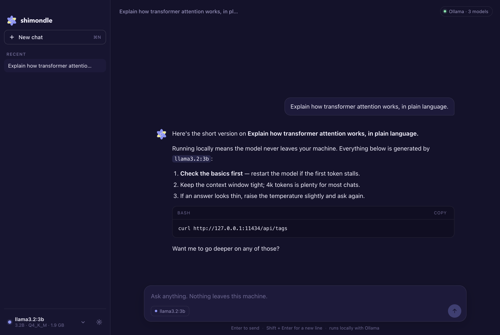
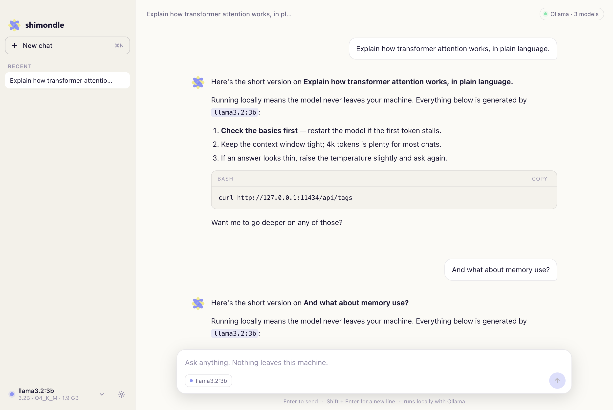

Your machine does the work
Every token is generated by a model running on your computer, through Ollama. There is no server in the middle, because there is no server.
shimondle-ai · independent software studio
Shimondle makes local-first tools for working with AI. No accounts, no cloud, no telemetry. The model runs on your machine, and so does everything around it.
macOS & Windows · MIT licensed · v0.1.0
01 — The app
Point Shimondle at the Ollama you already run. It lists the models you have pulled, streams answers token by token, and keeps every conversation in a folder you can read.


The same app in indigo and parchment. Both themes are drawn from the mark.
Version 0.1.0
Apple silicon and x64 Windows. The build is ad-hoc signed, not notarised, so macOS asks you to right-click → Open the first time.
All releases and checksums02 — How we build
Every token is generated by a model running on your computer, through Ollama. There is no server in the middle, because there is no server.
No accounts, no API keys, no analytics. Install it and it works. Update it when you feel like it, not when a dashboard tells you to.
MIT licensed, built with TypeScript and Rust. No framework to untangle, no tracker in the footer, no dark pattern in the settings pane.
03 — The studio
Shimondle is a small, independent studio, and the app shares its name. We make software we want to use: local, legible, and a little playful. The mark is an atom and a flower at once, which is roughly the idea.
Everything we build is open. The source for the app, its releases and its issue tracker live on GitHub, and the same will be true of whatever comes next.